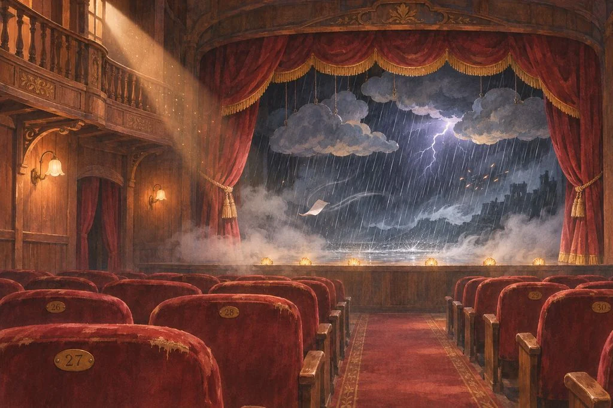

ТЕАТР Зал2026
Статья психолога
Разделяя, создавай
Почему привычка оправдывать поступки эмоциями лишает нас авторства — и как один короткий зазор между импульсом и действием меняет всё, от самоуважения до любви
Самая изящная ложь, которой мы прикрываем собственные решения, звучит до смешного просто: «Я сорвался, потому что разозлился». Или: «Я ничего не делаю, потому что мне лень».
Мы прячемся за эмоциями, как за пуленепробиваемым стеклом, убеждая и других, и самих себя, что выбора просто не было. Внутри этой логики всё безупречно: нажали кнопку — сработал механизм. Нашему мозгу такая экономия чертовски выгодна. Автопилот «ударили — бей, испугался — прячься, устал — замри» блестяще бережёт калории и избавляет от мучительной работы думать в реальном времени.
У этой экономии только одна цена: она незаметно отбирает у нас право прожить ту жизнь, которую мы на самом деле хотим.
Акт первый
Три этажа, где мы напрасно ищем себя
Я очень долго не понимал, где вообще искать себя настоящего. Какую часть внутреннего шума считать фундаментом, а какую — просто погодой за окном?
Долгое время мне казалось, что сердце моего «я» — это эмоции. Я был уверен, что именно в сильной вспышке человек наконец становится подлинным; поэтому годами считал, что алкогольное опьянение соединяет меня с самой сутью меня настоящего — снимает лишние фильтры, выпускает наружу правду.
Потребовалось время, чтобы разглядеть: эмоция — это вовсе не глубинная правда. Это короткая вспышка спички в ответ на мгновенную трактовку мозга. Кто-то рядом тяжело вздохнул — в голове за долю секунды пронеслось «я ему надоел», и в груди вспыхнула тревога. Пронеслось бы «он просто вымотался на работе» — и вместо тревоги зажглось бы сочувствие. Эти спички чиркают сами по себе; напрямую мы ими не управляем. Довольно странно искать свою опору в том, что тебе даже не подчиняется.
Кто-то рядом тяжело вздохнул. Какая мысль пронесётся?
Ладно, можно поискать себя этажом глубже — в долгих, тягучих состояниях. Например, в том вязком, липком тумане, который мы называем «ленью»: когда вина не даёт спокойно отдохнуть, а скука и тревога не дают начать. Стоит однажды перепутать это состояние с собой — и оно начинает диктовать, как жить. Или другой пример: на тебя накатывает мелкое, колючее злорадство, когда что-то, казавшееся тебе неправильным, с треском проваливается, и внутри неожиданно отзывается торжество. Несколько таких эпизодов — и приговор готов: «Я ленивый и злорадный человек». Красивая, аккуратная бирка, которую очень удобно повесить на шею и ничего с ней больше не делать.
Тогда, может быть, моя суть — в чувствах? В тех глубоких тектонических пластах, которые не вспыхивают за секунду, а складываются годами — как тихое доверие к тому, кто раз за разом оставался рядом с тобой в темноте. Но и здесь картина рассыпается при первом столкновении с реальностью. Потому что человек способен безмерно, до физической боли любить близкого — и ровно в ту же секунду, от одной небрежно брошенной фразы, испытывать острое желание его придушить.
Кто я в эту секунду — любящий или жестокий? И главный вопрос: что именно я хочу, чтобы меня определяло?
Акт второй
Зал, страх и недосягаемый зритель
Переломный момент случился не в тишине медитации, а посреди обычного учебного дня.
Я сидел на занятии, смотрел на сокурсников — все вокруг, разумеется, казались мне невероятно матёрыми, собранными и давно всё понявшими — и чувствовал, как меня намертво сковывает страх разоблачения. Знакомое до озноба ощущение: сейчас открою рот, и вся аудитория увидит, что я здесь случайно. Горло сжалось, тело требовало вжаться в стул и не отсвечивать.
И в ту самую секунду внутри словно произошло тихое расслоение. В памяти всплыла простая фраза Зои: «„Я не могу“ — это тоже просто мысль».
Что-то щёлкнуло. Вместо того чтобы быть тем, кого трясёт от страха, я вдруг стал тем, кто смотрит, как его трясёт. Внутри проснулся Наблюдатель — спокойный, ясный свидетель всего этого внутреннего спектакля. На сцене по-прежнему метались тревожные мысли, сжимался желудок, звучали привычные предостережения, но я больше не стоял в центре этого шума. Я оказался в зрительном зале — в точке, куда ни одна паническая мысль не могла дотянуться.
Именно этот «недосягаемый я» и оказался тем, кого я столько лет искал.
В образовавшемся миллиметре тишины вдруг появилось пространство выбора. Я понял простую и головокружительную вещь: всем своим эмоциям, состояниям и страхам можно честно отдать фон, но не отдавать им руль. В тот день я впервые сделал шаг в сторону того, что было мне важно, не дожидаясь, пока внутри наступит идеальный штиль. Я поднял руку. Высказался. Ощутимо облажался — слова легли криво, мысль сбилась. И всё равно вышел из зала с острым, чистым чувством гордости за себя.
В такие секунды открывается настоящая власть — не над миром, а над собственной траекторией. Ты вдруг на собственной шкуре узнаёшь: можно бояться до дрожи в коленях — и всё равно действовать смело. Можно гореть от злости — и при этом говорить бережно. Можно тонуть в «лени» — и спокойно встать, чтобы сделать первый шаг. Ты перестаёшь быть заложником собственной биохимии.
Это и есть первая половина формулы — разделение. Отделить себя от погоды внутри своей головы. Но само по себе разделение ничего не стоит, если оно превращается в холодное созерцание. Его единственный смысл — вторая половина: создание.
Акт третий
Шаги против ветра
Лучше всего эта механика видна там, где мы привыкли ждать чуда — в любви.
Я много лет искал любовь как внезапный удар током: как безошибочное притяжение, которое само вспыхивает, само несёт тебя вперёд и само всё решает. Но взрослая жизнь быстро показывает обратную сторону. Любовь — это не только попутный ветер влечения. Это ещё и шаги, которые ты делаешь прямо против ветра.
Бывают дни, недели и целые сезоны, когда электричества нет. Есть усталость, раздражение, обида, бытовая глухота. Если любовь для тебя — только эмоция, в такой день она исчезает без следа. Но если ты отделяешь мимолётную погоду от своего выбора и продолжаешь действовать любя — слушать, не бить в больное место, оставаться рядом, когда хочется хлопнуть дверью, — любовь никуда не девается. Она перестаёт быть капризным туманом и становится плотной, осязаемой реальностью.
Конечно, открываться и оставаться бережным страшно. Всегда есть риск, что в ответ прилетит холод, непонимание или отказ. Но мы постоянно упускаем решающую деталь: достойная форма нашего поступка в первую очередь нужна даже не партнёру. Она нужна нам самим — чтобы сохранить самоуважение.
Акт четвёртый
Конец эпохи костылей
Посмотрите, сколько энергии люди тратят на то, чтобы добыть ощущение собственной значимости в обход. Вокруг выросла целая индустрия психологических костылей: кто-то покупает дорогую машину, чтобы почувствовать свой вес в мире; кто-то заводит тайный роман, чтобы снова ощутить себя живым и желанным; кто-то бесконечно собирает чужое одобрение, пытаясь залатать внутреннюю пустоту.
Но как только ты начинаешь совершать осознанный поступок вопреки автоматизму, все эти посредники мгновенно теряют смысл.
Когда внутри тебя кипит ярость, а ты всё равно выбираешь говорить с уважением — прямо в эту секунду, без единого свидетеля и без единого лайка, ты становишься человеком с достоинством. Когда тебе до тошноты страшно, но ты делаешь шаг навстречу другому — прямо в эту секунду ты становишься смелым и любящим. Тебе не нужно никому ничего доказывать, не нужно ждать, пока кто-то выпишет тебе справку о том, что ты хороший. Твоя ценность перестаёт висеть на чужом мнении — она вшивается прямо тебе под кожу.
Именно это, кстати, безошибочно считывают люди рядом с нами. Они сканируют не отдельные громкие жесты и не красивые обещания в хорошие дни. Они сканируют наш характер — то, из чего мы отлиты в этих незаметных ежесекундных выборах.
Человек, который живёт на автопилоте — всегда огрызается на боль, всегда бьёт в ответ, всегда прячется за «я не сдержался», — со временем превращается в холодный, непробиваемый монолит. Может быть, он и защищён от ударов, но рядом с ним невозможно дышать.
Эпилог
Древняя формула власти звучала как «разделяй и властвуй». Внутренняя свобода устроена тоньше: разделяя, создавай. Отделяй себя от вспышки, чтобы создать поступок. Отделяй себя от страха, чтобы создать смелость. Отделяй себя от обиды, чтобы создать близость.
Разведите в стороны. Потяните или просто коснитесь.
разделяя, создавай
Каждый раз, когда Наблюдатель внутри тебя в самую тёмную минуту тихо произносит: «Я вижу свою боль. Мне хочется всё разнести и уйти. Но я выбираю остаться и поговорить», — в мире происходит почти незаметный, но необратимый сдвиг.
Один такой выбор вопреки эмоции спасает ночь. Тысяча таких выборов создают человека, которым ты всегда хотел стать, — и меняют всю твою жизнь.
Служебный вход
За кулисами
Зал опустел, а машинная ещё открыта. Здесь делают погоду для сцены. Попробуйте сами.